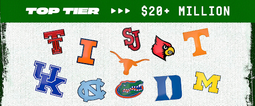
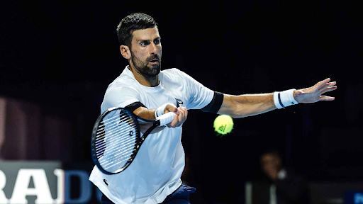
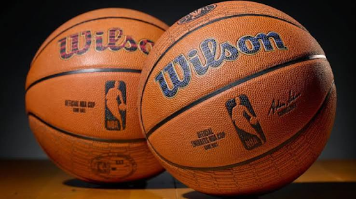
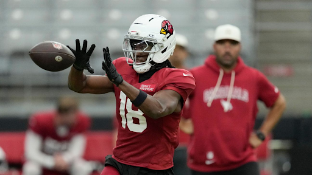

This week’s issue covers the biggest moves, challenges and innovations across sports: College Basketball’s record-breaking NIL spending, Novak Djokovic’s fight to qualify for the ATP Finals, the NBA’s new smart Basketball Technology, and Marvin Harrison Jr.’s fresh start with the Houston Texans.
Eight Digit Spending Takes Over College Basketball Roster Construction
By Cody Feldman
A new era of college basketball is officially in full force.
With the NCAA basketball season tipping off on Sunday, a record-setting amount of NIL money has been spent by basketball programs, with eleven teams spending $20+ million on their rosters.
Interestingly, the distribution of teams in the upper echelon of NIL spending is spread across five different conferences. Kentucky, Tennessee, Florida and Texas lead spending for the SEC; Michigan and Illinois are the top spenders in the Big Ten; and Louisville, Duke and North Carolina are atop the ACC. Meanwhile, Texas Tech and St. John’s are the sole big spenders in their respective conferences, the Big 12 and Big East.

Photo via X
Before the season starts, the experts seem to believe in the correlation between big spending and success. The top three teams in the AP Poll (Florida, Duke, Illinois) are all in the top tier of NIL spenders, while Texas (7) and Tennessee (8) also make the top ten.
All 11 teams are chasing the success found last year by Michigan, who had a roster made up mostly of transfers. All five of the Wolverines’ starting players transferred from other schools, including Yaxel Lendenborg, who had the third-highest NIL valuation of any men’s basketball player.
While Michigan did not have the overall spending that these other teams have, they managed to win a national championship with a roster built out of the transfer portal. This year, teams are going above and beyond to lure players who can lead them to the same result.
Texas Basketball is one of those teams, with the number one ranked transfer portal class in the country and three of their five projected starters coming out of the portal. With their first game being on Monday against Chicago State, coach Sean Miller will get his first look at the roster he hopes to lead to a championship.
Tennis
The King or The Djoker: Novak’s Final Scramble
By Emily Cheong
As the 2026 tennis season comes to a close, all eyes are on the Nitto ATP Finals and on who will take home the top $5,000,000 prize. For the first time in years, Novak Djokovic treads water just for the chance to qualify.

Photo via ATP Tour
An icon alongside Roger Federer and Rafael Nadal, this untouchable giant is now facing major shake-ups after seeing season after season of rising talent. Following a semi-finals loss at Wimbledon to defending champion Jannik Sinner, Novak suffered startling early-round exits to lower-ranked players like Thiago Tirante and Mariano Navone.
Even with the China Open title under his belt, Novak faced wild circumstances, running into mid-match retirements and injuries in both the semis and finals. Currently sitting outside the guaranteed qualifying spots, Djokovic is awaiting his opening match at the Swiss Indoors in Basel after accepting a wildcard entry, a tournament that last saw him in 2011.
If he fails to make deep runs in Basel and the Paris Masters, this will be the first time since his injury-shortened 2017 season that he misses out on year-end qualification, stuck tied with Federer for the most finals qualifications. This make-or-break sprint highlights a dark ending to come.
Is the ATP Tour finally leaving behind one of tennis’s greatest champions?
NBA
You Can’t Improve What You Don’t Measure
By Deepti Adhyam
Imagine a basketball knew more about a shot than you did.
The NBA is making that idea a reality with a “smart ball” developed alongside Wilson. Inside the basketball is a Bluetooth sensor weighing one gram that tracks movement, spin, and trajectory without changing the physicality of the basketball. This technology could help referees settle disputes while helping players understand patterns.

Photo via GadgetMatch
This potential goes beyond the basics. Imagine a player analyzing hundreds of shots to identify patterns and observing what needs adjusting. Instead of relying entirely on instinct, players could use real data to improve their performance. Through statistics like release speed and ball rotation, the smart ball could help identify players’ weaknesses and make more precise adjustments. This data-driven approach could support faster player development and give teams a competitive advantage from measurable progress.
The bigger lesson is, you can’t improve what you don’t measure.
We set goals without examining our starting points. Students want better grades but don’t track previous study methods. Like a player taking shots without analyzing their technique, we can spend hours working toward a goal while unknowingly repeating the same mistakes.
Of course, numbers can’t capture everything, and progress isn’t always linear. Not having progress every day is completely normal.
The smart ball reminds us that improvement begins with awareness. Before trying to change your results, take time to understand your habits: track your progress, recognize patterns, and make adjustments.
Sometimes, the crucial step isn’t working harder. It’s understanding what needs to change.
NFL
Former #4 Overall NFL Draft Pick Traded After Just Two Seasons
By Nico Borrelli
Marvin Harrison Jr. was selected #4 overall by the Arizona Cardinals in the 2024 NFL Draft. Carrying the weight of a top-five pick and the name of a Hall of Fame father, Harrison faced enormous expectations in Arizona that he never quite met. On October 11th, Harrison and a 2027 6th-round pick were traded to the Houston Texans for 2027 2nd- and 7th-round selections.
In college, Harrison became the first wide receiver in Ohio State history to record back-to-back 1,000-yard seasons, and finished his time at Ohio State with 2,613 career receiving yards and 31 touchdowns. In 2023, he won the Fred Biletnikoff Award for the best receiver in the nation and was named a Heisman finalist.

Photo via ESPN
As a rookie in 2024, Harrison finished with a solid 885 yards and 8 touchdowns. However, in 2025, his stats dropped, with him only gaining 608 yards and 4 touchdowns in the season. His production then continued to drop into 2026, as he managed just 85 yards in the first four weeks before being traded to the Texans. With the Texans, Harrison reunites with his college quarterback, CJ Stroud, with whom he had great success at Ohio State.
Less than a week after the trade was completed, Harrison traveled with the Texans to London to face the Jacksonville Jaguars. In limited snaps, he looked promising, with three catches for 34 yards in their win.
The rest of this season will be crucial for Harrison’s career moving forward, as well as for his quarterback, as Stroud fights for a contract extension. The Texans currently sit at 2-4, but have won two in a row, and after beating the division-leading Jaguars, their playoff hopes are still alive.